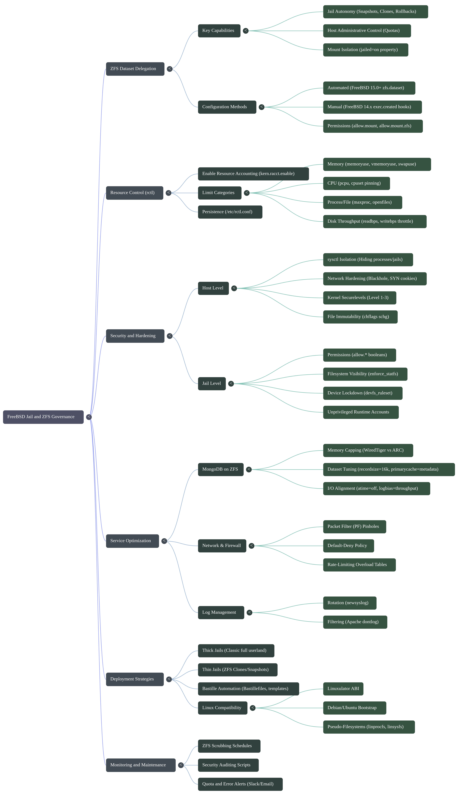

Apaixonado pelo FreeBSD
Sobre as cores do artigo
Notação de cor
Notação de cor
Notação de cor
Ligação interna
Ligação externa
Itálico, Negrito, Sublinhado & código
Tenho de admitir. Apaixonei-me pelo FreeBSD e nada me pode parar agora. Não precisas de instalar software extra. Não precisas de instalar software extra. Devo repetir isto 1000 vezes? Como o OpenBSD mas sem aquelas restrições que matam o desempenho do teu hardware, o FreeBSD é o amor de que precisas. O teu melhor amante!

Paranoico com a Segurança?
Para montar um sistema FreeBSD seguro, deves implementar uma arquitetura de defesa em profundidade, em camadas como a pele de uma cebola, que abrange o ajuste do kernel, a imutabilidade dos ficheiros de sistema, as restrições de ligação dos serviços, o endurecimento do SSH, a filtragem de pacotes, o isolamento por jail, o controlo de recursos e a auditoria automatizada.
1. Endurecimento do kernel ( /etc/sysctl.conf )
Configura as variáveis de estado do kernel em `/etc/sysctl.conf` para restringir a visibilidade dos processos, endurecer a execução em memória e descartar sondagens de rede não autorizadas.
Isolamento de processos e informação:
# Esconde os processos de outros utilizadores das contas sem root.
security.bsd.see_other_uids=0
# Esconde os processos de outros grupos.
security.bsd.see_other_gids=0
# Esconde os processos a correr dentro de jails dos processos sem privilégios do anfitrião.
security.bsd.see_jail_proc=0
# Impede os utilizadores sem privilégios de ler os registos do kernel via `dmesg`.
security.bsd.unprivileged_read_msgbuf=0
# Proíbe os processos sem privilégios de depurar ou traçar outros processos.
security.bsd.unprivileged_proc_debug=0
security.bsd.allow_ptrace=0
Proteções de memória, execução e sistema de ficheiros
# Impede os utilizadores sem privilégios de criar ligações físicas a ficheiros que não possuem.
security.bsd.hardlink_check_uid=1
security.bsd.hardlink_check_gid=1
# Aleatoriza a atribuição do Process ID (PID).
kern.randompid=1
# Impede que executáveis setuid despejem core files que possam revelar dados sensíveis.
kern.sugid_coredump=0
# Impõe a proteção de memória **Write XOR Execute (**$W\\text{^}X$**)**.
kern.elf64.allow_wx=0
kern.elf32.allow_wx=0
Endurecimento da pilha de rede
# Descarta silenciosamente os pacotes TCP e UDP enviados para portas fechadas, para frustrar as sondagens de portas.
net.inet.tcp.blackhole=2
net.inet.udp.blackhole=1
# Ativa os SYN cookies para mitigar ataques SYN flood.
net.inet.tcp.syncookies=1
# Descarta os redirecionamentos ICMP e desativa o encaminhamento por origem IP.
net.inet.icmp.drop_redirect=1
net.inet.ip.redirect=0
net.inet.ip.sourceroute=0
net.inet.ip.accept_sourceroute=0
Para aplicar estes parâmetros sysctl sem reiniciar, corre: sysctl -f /etc/sysctl.conf
2. Níveis de segurança do kernel (`securelevel`) & imutabilidade do sistema
Ativar o Securelevel do kernel: em `/etc/rc.conf`, define:
# 1 (produção), 2 (segurança alta) ou 3 (eletrodoméstico)
sysrc kern_securelevel_enable="YES"
sysrc kern_securelevel="1"
Subir `kern.securelevel` para 1 ou mais impede carregar e descarregar módulos do kernel, impõe as flags de imutabilidade dos ficheiros e bloqueia escritas diretas no disco.
Definir as flags de imutabilidade dos ficheiros
# Antes de ativar o `securelevel`, marca os binários e ficheiros de configuração críticos como imutáveis no sistema (`schg`)
chflags schg /boot/kernel/kernel /sbin/init /etc/rc.conf /etc/pf.conf
# (Nota: com securelevel 1 ou mais, o root não pode modificar estes ficheiros nem remover as flags *schg* sem reiniciar em modo de utilizador único)
Pré-alocação de módulos do kernel
Como o carregamento de módulos está desativado a partir do securelevel 1, lista todos os módulos de kernel necessários em `/etc/rc.conf`, em `kld_list="..."`, antes de reiniciar.
3. Fechar portas de serviços e de rede
Auditar sockets à escuta
Corre `sockstat -4 -6 -l` no anfitrião para ver os sockets ativos à escuta.
Restringir as ligações dos sockets
Reconfigura os serviços do anfitrião para não se ligarem a endereços IP genéricos (`*:port` ou `INADDR_ANY`), impedindo que os serviços do anfitrião apanhem o tráfego enviado para os IPs das jails.
Desativar serviços desnecessários
Define `syslogd_flags="-ss"` para desativar os sockets de rede do `syslogd`, desativa os serviços que não usas (por exemplo, `sendmail_enable="NO"`, `rpcbind_enable="NO"`) e desliga os daemons internos de teste.
4. Acesso SSH endurecido (`/etc/ssh/sshd_config`)
Porta personalizada
Liga o SSH a uma porta alta à tua escolha (por exemplo, `Port 32145`).
Desativar o login direto de root
Define `PermitRootLogin no` em `/etc/ssh/sshd_config`.
Restringe a escalada administrativa aos utilizadores autenticados do grupo `wheel`, com `su` ou `ksu`.
Impor autenticação por chave SSH
Define `PasswordAuthentication no` para desativar o login por palavra-passe a favor das chaves públicas SSH ou do Kerberos.
Limites de sessão e de ligação
Impõe períodos de tolerância e limites de sessão estritos: `LoginGraceTime 30`, `MaxAuthTries 3` e `MaxSessions 3`.
Restrições das chaves
Restringe o login por chave pública com `from="IP/DOMAIN"` nos ficheiros `authorized_keys` e desliga o encaminhamento de chaves quando te ligas através de anfitriões não fidedignos.
5. Proteção com firewall Packet Filter (`/etc/pf.conf`)
Ativar o PF
Acrescenta `pf_enable="YES"` e `pflog_enable="YES"` a `/etc/rc.conf`.
Conjunto de regras que nega por omissão
Aplica uma política estrita de negação no topo de `/etc/pf.conf` (`block return log on $ext_if all` ou `block log all`).
Anti-spoofing
Acrescenta `antispoof for $ext_if` para descartar os pacotes que dizem vir de blocos de rede internos.
Limitação automática de força bruta
Define uma tabela de bloqueio persistente.
Como és hiperparanoico, usas Jails
Sim, queres instalar todo o tipo de software extra em jails. Os teus programas favoritos para aceder à internet. Sim, assim. Mas queres usar as Jails Clássicas, porque dão isolamento total em comparação com todos os outros métodos que usam software como o Bastille e outros. Vais precisar de mais tempo, mas quem se importa, certo? A vida é feita de tempo gasto, de qualquer forma. O detalhe super fixe é que podes limitar o consumo de hardware de cada jail. Podes ter uma jail que só ocupa 200MB de RAM e outra que pode ocupar cerca de 2GB. Podes dizer que a tua jail pode ou não aceder à internet, que outras jails podem ou não falar com ela, que tens 1 ou mais CPUs dedicadas a esta jail, e montar partições reais nela. É como montar KVM com QEMU, mas melhor, porque as Jails já estão embutidas no kernel. Não precisas de instalar software extra nesta fase.